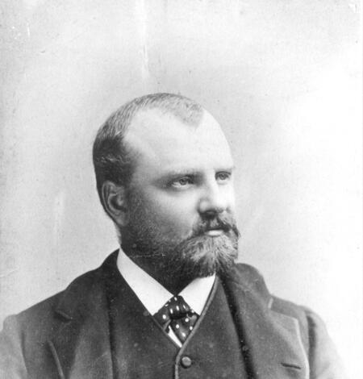
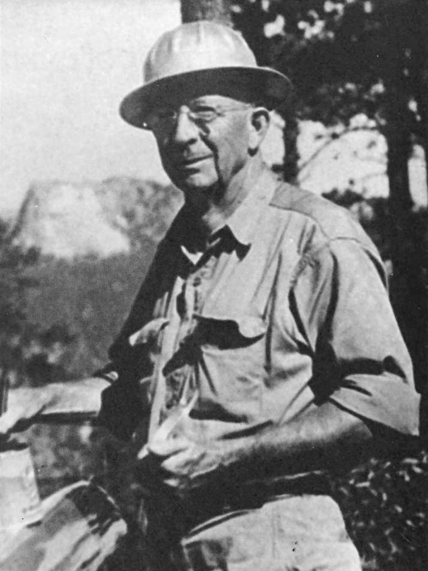
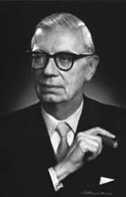
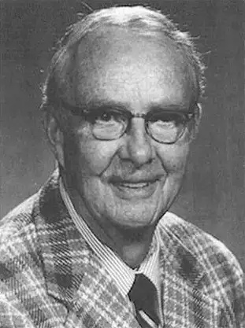
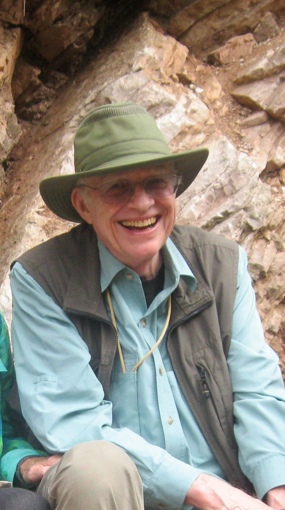
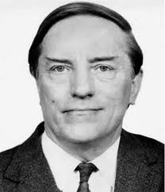

Historical Catastrophists Pt. 2
Article researched and written by the author of this website, Tyler V. (BraveCat)
Posted Mar. 13th, 2026
Overarching Insight
The late 1800s and early 1900s marked a turning point regarding catastrophist science where evidence solidified and theories began to consistently overlap albeit with some conflict. Fossil and mineral evidence was overtaken by focus on volcanism and glacial striations with cosmic influence starting to become more important. Darwin's theories of evolution were tested and disputed, but ultimately found a balance between periods of slower evolution followed by repeated rapid changes in ecology from fossil findings and geological layers following world wide extinction events.
"Ideas without precedent are generally looked on with disfavor, and men are shocked if their conceptions of an orderly world are challenged." - J Harlen Bretz.
Prominent Historical Figures From The 1800s - 1900s
Clarence King (1842–1901)

Role: American geologist; first director of the United States Geological Survey (USGS); leader of the Geological Exploration of the Fortieth Parallel (1867–1872).
King was a brilliant, charismatic figure whose geological work in the American West provided ammunition for catastrophism during a period when Lyellian uniformitarianism seemed triumphant.
Core Theory — Catastrophic Evolution
King developed what he called a theory of "catastrophic evolution" arguing that rapid environmental changes, not slow Darwinian selection, drove the formation of new species. His key ideas:
Abrupt environmental shifts cause rapid evolutionary responses. Species are relatively stable during periods of environmental consistency but undergo dramatic transformation when conditions change suddenly.
Geological evidence from the West showed abrupt breaks in stratigraphic sequences, with sudden faunal replacements that could not be explained by gradual change.
Climate catastrophes, particularly rapid temperature shifts, were the primary drivers of extinction and speciation.
Key Details and Significance
King's 40th Parallel Survey (covering a 100-mile-wide swath along the 40th parallel from the Sierra Nevada to the Great Plains) was one of the great scientific expeditions of the 19th century. It produced detailed geological maps, stratigraphic sections, and fossil collections that documented the complex geological history of the American West.
His major scientific work, Systematic Geology (1878), synthesized the survey's findings. King documented abrupt changes in fossil assemblages across stratigraphic boundaries in Nevada and Utah, arguing these represented sudden environmental catastrophes rather than gaps in the record.
King was particularly interested in the Quaternary period and the evidence for rapid climate change. He documented glacial features in the Sierra Nevada and Great Basin, contributing to the growing understanding of ice ages in North America.
He proposed that volcanic activity in the West had caused sudden environmental disruptions, killing off existing species and allowing new forms to evolve rapidly in the disturbed environments. This anticipated aspects of modern theories about volcanism and mass extinction.
King's catastrophism was explicitly anti-Darwinian in its mechanism (though not anti-evolutionary). He accepted that species change over time but rejected Darwin's mechanism of slow, gradual natural selection as the primary driver. He argued instead for what we might now call punctuated change driven by environmental catastrophe, an idea that foreshadows Gould and Eldredge's punctuated equilibrium.
King's Legacy
His 1877 lecture, "Catastrophism and Evolution", delivered at the Sheffield Scientific School at Yale, was his most explicit statement of these ideas. He argued that the geological record of the American West showed "the operation of catastrophic forces" and that "the evidence is that specific changes have been, in a geological sense, sudden."
King's later life was marked by financial ruin (from failed mining investments), declining health, and a secret: he had been living a double life as a Black man named "James Todd," married to an African American woman named Ada Copeland. This came to light only after his death and has been the subject of considerable historical scholarship. Now that's an unexpected turn of historical revelation..
Catastrophist relevance
King represents the application of catastrophism to evolutionary biology — an important extension beyond geology. His argument that environmental catastrophes drive rapid evolutionary change anticipated late 20th-century thinking about mass extinctions as drivers of evolutionary innovation. The modern understanding that mass extinctions (like the end-Cretaceous event) radically reshape evolutionary trajectories and open ecological niches for rapid diversification (e.g., the mammalian radiation after the dinosaur extinction) validates King's core insight, even if his specific mechanisms were wrong.
J Harlen Bretz (1882–1981)

Role: American geologist; professor at the University of Chicago; one of the most vindicated catastrophists in the history of geology.
Bretz's story is perhaps the greatest vindication of catastrophist thinking in modern geology — a case where a lone researcher's catastrophist interpretation was mocked for decades before being conclusively proven correct.
Core Theory — The Spokane Flood (Missoula Floods)
Bretz proposed that the Channeled Scablands of eastern Washington state which are a vast, bizarre landscape of deeply carved channels, dry waterfalls, enormous gravel bars, and stripped-bare basalt bedrock, were formed by a single, colossal flood of almost unimaginable magnitude.
The Channeled Scablands cover approximately 15,000 square miles of eastern Washington. They feature:
Coulees — enormous, deeply cut channels with no present-day stream to explain them
Dry Falls — a 3.5-mile-wide, 400-foot-high horseshoe-shaped cliff that was once a waterfall dwarfing Niagara Falls (which is only 1 mile wide and 167 feet high)
Giant current ripples — gravel ripple marks up to 50 feet high and 500 feet apart, visible only from the air, indicating water flows of extraordinary depth and velocity
Erratic boulders — enormous basalt boulders transported miles from their source
Plunge pools — massive basins carved at the base of now-dry cataracts
Streamlined islands — tear-drop-shaped hills sculpted by flowing water
Key details and Significance
Bretz began fieldwork in the Scablands in 1922 and published his first paper, "The Channeled Scablands of the Columbia Plateau," in The Journal of Geology in 1923. He argued that only a catastrophic flood of continental scale could explain these features — a flood he estimated at up to 10 cubic miles of water per hour, flowing at speeds up to 65 mph.
Later research (particularly by Victor Baker in the 1970s–1980s and Richard Waitt in the 1980s) demonstrated that the Scablands were actually carved by multiple floods, perhaps 40 or more over a period of roughly 2,000 years during the last glacial period (approximately 15,000–13,000 years ago). The ice dam reformed after each drainage, the lake refilled, and the dam burst again. Each individual flood was still catastrophic on an almost incomprehensible scale.
Fierce Backlash and Defense
The geological establishment, deeply committed to uniformitarianism, regarded Bretz's hypothesis as a throwback to biblical catastrophism. The Geological Society of Washington organized a special session in January 1927 essentially to attack Bretz's ideas. Six prominent geologists presented papers arguing against the flood hypothesis, offering alternatives like normal river erosion, tectonic uplift, or glacial action. Bretz defended his position vigorously but was outnumbered and outranked.
The opposition was led by figures like Eliot Blackwelder of Stanford, who dismissed the flood hypothesis as "preposterous" and "wholly inadequate." The unspoken objection was clear: accepting a catastrophic flood sounded too much like Noah's Flood. As Bretz himself noted wryly, "Ideas without precedent are generally looked on with disfavor, and men are shocked if their conceptions of an orderly world are challenged."
The source of the water was Bretz's major weakness. He could describe the flood's effects in magnificent detail but could not satisfactorily explain where such an enormous volume of water came from. This changed in the 1940s when geologist Joseph Thomas Pardee demonstrated that Glacial Lake Missoula, an enormous ice-dammed lake in western Montana containing up to 500 cubic miles of water, had formed behind a lobe of the Cordilleran ice sheet. When the ice dam failed, the lake drained catastrophically, sending a wall of water across Idaho and Washington.
Pardee had actually suspected this since the 1910s but, characteristically cautious, had published only hints. His 1942 paper on the giant current ripples at Camas Prairie, Montana, provided the smoking gun: ripples identical to those in the Scablands but located in the bed of the former lake.
Brentz's Vindication Came Late
In 1979, at the age of 96, Bretz received the Penrose Medal, the Geological Society of America's highest honor. He reportedly told his son, "All my enemies are dead, so I have no one to gloat over."
Catastrophic Relevance
Bretz's story is the paradigm case for modern catastrophism. It demonstrates several crucial points:
Catastrophic processes that operate on scales not observed in human history have occurred and left clear geological evidence.
The uniformitarian assumption that "the present is the key to the past" can be actively misleading when past events exceeded anything in present experience.
Resistance to catastrophist hypotheses is often ideological rather than purely empirical. The geological community's initial rejection of Bretz was driven more by philosophical commitment to gradualism than by careful analysis of his evidence.
The Scablands remain a key reference point for researchers studying catastrophic flooding on both Earth and Mars (where similar features have been identified in the outflow channels).
Otto Schindewolf (1896–1971)

Role: German paleontologist; professor at the University of Tübingen; one of the most important paleontologists of the 20th century, though less well-known in the English-speaking world.
Schindewolf developed what is arguably the first modern neocatastrophist framework, combining paleontological evidence with cosmic mechanisms decades before the Alvarez hypothesis.
Core Theory — Neocatastrophism and Cosmic Radiation
Schindewolf's major work, Grundfragen der Paläontologie (Basic Questions of Paleontology, 1950), laid out a comprehensive critique of gradualist paleontology and proposed an alternative framework.
The fossil record does NOT show gradual transitions between major groups. Instead, major new species groups such as phyla and classes appear abruptly in the record. A pattern Schindewolf called "typostrophism." He divided evolutionary history into three phases for each lineage:
Typogenesis — explosive initial diversification and morphological experimentation.
Typostasis — stabilization and refinement of the basic body plan.
Typolysis — degeneration and eventual extinction.
Mass extinctions are real and sudden. Schindewolf was one of the first paleontologists to rigorously document the abruptness of extinction events at major geological boundaries, particularly the Permian-Triassic boundary and the Cretaceous-Paleogene boundary.
Cosmic radiation as an extinction mechanism. Schindewolf proposed that nearby supernova explosions could periodically bathe the Earth in intense cosmic radiation, causing:
Mass extinctions of organisms directly killed or sterilized.
Dramatic increases in mutation rates, producing the rapid morphological innovations seen during typogenesis.
Climate disruption through effects on the atmosphere.
Key Details and Significance
Schindewolf's documentation of the Permian-Triassic extinction was groundbreaking. He showed that in the marine sections he studied, up to 96% of marine species disappeared at or near the boundary, a magnitude of extinction that could not be explained by gradual environmental change. This "Great Dying" remains the most severe mass extinction in Earth history.
His concept of typostrophism was partly derived from the earlier German paleontological tradition (particularly Karl Beurlen) and partly from his own observations. While the specific framework (with its teleological overtones of "degeneration") is no longer accepted, his observation that major evolutionary innovations appear abruptly is now recognized as accurate. The most dramatic example of this is the Cambrian Explosion recorded as the rapid appearance of most major animal phyla in a geologically brief interval.
Schindewolf was a fierce critic of neo-Darwinian gradualism. He argued that the fossil record could not be explained by the accumulation of small mutations selected by natural environment. The gaps were too large, the transitions too abrupt. This brought him into conflict with the architects of the Modern Synthesis (particularly Ernst Mayr and George Gaylord Simpson), who argued that the gaps were artifacts of incomplete preservation.
His ideas influenced Stephen Jay Gould, who acknowledged Schindewolf as a precursor of punctuated equilibrium and who similarly challenged gradualist orthodoxy (though Gould rejected Schindewolf's specific mechanisms).
Catastrophic Relevance
Schindewolf is the bridge between classical Cuvierian catastrophism and modern neocatastrophism. He took Cuvier's core observation that the fossil record shows abrupt extinction and replacement, and combined it with a cosmic mechanism (supernova radiation). This move from terrestrial to extraterrestrial causation anticipated the conceptual revolution brought about by the Alvarez hypothesis. His work also established the pattern that would recur throughout 20th-century catastrophism: a rigorous observer of the fossil record proposes a sudden, dramatic mechanism and is initially dismissed by an establishment committed to gradualism.
Luis Alvarez (1911–1988) and Walter Alvarez (1940–)


Roles: Luis Alvarez was an American experimental physicist (Nobel Prize in Physics, 1968, for work on particle physics); Walter Alvarez is an American geologist, professor at UC Berkeley. Together (along with nuclear chemists Frank Asaro and Helen Michel), they formulated the asteroid impact hypothesis for the Cretaceous-Paleogene (K-Pg) mass extinction.
Core Theory — Impact Extinction
In their landmark 1980 paper in Science, "Extraterrestrial Cause for the Cretaceous-Tertiary Extinction," the Alvarez team proposed that a large asteroid (~10 km diameter) struck the Earth 66 million years ago, causing the mass extinction that killed the non-avian dinosaurs and approximately 75% of all species.
The Evidence
Iridium anomaly: Walter Alvarez, studying the Cretaceous-Tertiary boundary clay layer at Gubbio, Italy, found an extremely thin layer of clay between the Cretaceous limestone (rich in foraminifera fossils) and the Tertiary limestone (with drastically different, impoverished fauna). His father Luis, a physicist accustomed to solving problems with precise measurement, suggested measuring trace elements in the clay to determine how long it took to deposit. They found the clay was enormously enriched in iridium, a platinum-group element that is extremely rare in Earth's crust but relatively abundant in meteorites and asteroids. The iridium concentration was 30 times higher than in surrounding rocks at Gubbio, and similar anomalies were subsequently found at Cretaceous-Paleogene boundary sites worldwide (eventually at over 100 locations).
Kill mechanism: The Alvarez team proposed that the impact would have:
Ejected enormous quantities of dust and debris into the atmosphere, blocking sunlight for months to years.
Caused a "nuclear winter" effect, collapsing photosynthesis and food chains
Generated massive wildfires from the re-entry of heated ejecta.
Produced acid rain from nitrogen oxides created by the superheated atmosphere.
Created mega-tsunamis hundreds of meters high.
The Chicxulub crater: The hypothesis gained its most dramatic confirmation in 1991 when Alan Hildebrand and others identified a 180-kilometer-wide impact crater buried beneath the Yucatán Peninsula of Mexico, the Chicxulub crater. The crater's age (~66 million years) matched the Cretaceous-Paleogene boundary precisely. Subsequent drilling into the crater confirmed shocked quartz, impact melt rocks, and other diagnostic features.
Key Details and Significance
The initial reaction to the Alvarez hypothesis was extremely contentious. Many paleontologists, led by figures like William Clemens, Robert Bakker, and Dewey McLean, argued that the dinosaur extinction was gradual (occurring over millions of years before the boundary) and caused by volcanic activity, climate change, or sea-level fluctuations. The Deccan Traps explained as massive volcanic eruptions in India spanning the Cretaceous-Paleogene boundary, were offered as an alternative mechanism.
The debate between impact and volcanism was one of the most intense scientific controversies of the late 20th century. It was complicated by disciplinary tribalism as many paleontologists resented physicists invading "their" field with a dramatic hypothesis unsupported by detailed fossil evidence.
The current scientific consensus which was reached over decades of intensive research, is that the Chicxulub impact was the primary cause of the Cretaceous-Paleogene extinction, though the Deccan Traps volcanism may have contributed to environmental stress before and after the impact. A landmark 2010 study in Science, signed by 41 researchers, concluded that the impact was the decisive extinction trigger.
Luis Alvarez, with characteristic bluntness, dismissed paleontologist critics by saying, "I don't like to say bad things about paleontologists, but they're really not very good scientists. They're more like stamp collectors." This did not endear him to the paleontological community but reflected his physicist's confidence in quantitative evidence.
Broader implications
The Alvarez hypothesis transformed the scientific understanding of Earth history in several profound ways. It established that extraterrestrial events can cause mass extinctions, something geologists had been reluctant to accept since the demise of biblical catastrophism. It revived catastrophism as a legitimate scientific framework, ending the century-long dominance of strict uniformitarianism. It inspired the search for impact signatures at other extinction boundaries with varying success. the Permian-Triassic extinction remains attributed primarily to volcanism. It catalyzed the development of planetary defense programs to detect and potentially deflect future threatening asteroids (e.g., NASA's DART mission). It influenced public consciousness about existential risks and the fragility of life on Earth.
Catastrophist relevance
The Alvarez hypothesis is the most important development in catastrophism since Cuvier. It vindicated the core catastrophist claim that sudden, enormous events, not gradual processes, can reshape the biosphere. It provided a specific, testable, physical mechanism (asteroid impact), grounded in physics and chemistry, for catastrophic extinction. And it demonstrated that the uniformitarian assumption (the present is the key to the past) can be profoundly misleading when applied to events that occur on million-year timescales. The Alvarez revolution made it scientifically respectable to invoke catastrophes, a transformation that enabled subsequent catastrophist research on topics from the Younger Dryas to Snowball Earth.
Derek Ager (1923–1993)

Role: British geologist; professor at University College Swansea (now Swansea University); president of the Geological Association.
Ager was one of the most articulate and influential advocates of neocatastrophism in the late 20th century, arguing for a reformation of geological thinking that acknowledged both gradual and catastrophic processes.
Core Theory — Episodic Geology
Ager's key works, The Nature of the Stratigraphical Record (1973, revised 1981 and 1993) and The New Catastrophism (1993), presented a systematic argument that the geological record is dominated by rare, brief, catastrophic events rather than steady, gradual processes.
Key Ideas
"The history of any one part of the earth, like the life of a soldier, consists of long periods of boredom and short periods of terror." This famous aphorism captures Ager's central insight. Most of geological time is represented by gaps in the record (unconformities, periods of non-deposition or erosion), while the actual rock record was deposited during brief, intense episodes of storms, floods, volcanic eruptions, turbidity currents, and similar events.
The incompleteness of the record. Ager argued that geologists had systematically underestimated how incomplete the geological record is. The thickness of sedimentary rocks, divided by the time they represent, gives absurdly low "sedimentation rates" far lower than anything observed today. This is because most time is not represented by rock at all. The rocks that exist were deposited during events, not during the long intervening periods of stasis.
Storm Deposits and Event Beds
Tempestites — storm-deposited beds in shallow marine sequences.
Turbidites — deposits from submarine landslides and density currents.
Bone beds — concentrated layers of fossil bones suggesting mass mortality events.
Tsunami deposits — distinctive sedimentary signatures of massive waves.
Against Uniformitarianism as Philosophy
Ager carefully distinguished between methodological uniformitarianism (the idea that physical laws are constant which he accepted) and substantive uniformitarianism (the idea that past geological processes operated at the same rates and intensities as today which he rejected). He argued that Lyell's uniformitarianism had become dogma that blinded geologists to the evidence for catastrophic events.
"Catastrophism without the supernatural." Ager was emphatic that his neocatastrophism was entirely naturalistic. He was not invoking divine intervention or rejecting evolutionary theory. He was simply arguing that natural processes occasionally operate at scales and intensities far beyond anything in human experience.
Key Details and Significance
Ager's writing style was remarkably engaging and often humorous. His books are full of vivid examples, personal anecdotes from fieldwork around the world, and pointed criticisms of geological orthodoxy. This accessibility helped his ideas reach a wide audience. He documented case studies from around the world:
The Liassic bone beds of England, containing densely packed marine reptile bones suggesting mass mortality.
Cretaceous chalk formations that, despite their great thickness, were deposited far more rapidly than traditional estimates suggested.
Flysch deposits in the Alps — thousands of meters of sediment deposited by repeated turbidity currents.
Ager was careful to note that his catastrophism was not periodic or cyclical. He did not argue for regular, predictable catastrophes. Rather, he argued that catastrophic events of varying magnitude occur irregularly throughout geological time, and it is these events that produce most of the rock record.
Catastrophist Relevance
Ager is perhaps the most important figure in making catastrophism respectable in mainstream geology in the late 20th century. His careful, evidence-based arguments, combined with his explicit rejection of supernaturalism and pseudoscience, provided a model for how catastrophism could be scientific without being lunacy. His "long periods of boredom and short periods of terror" formulation elegantly captures the modern geological consensus that Earth history includes both gradual and catastrophic processes. A position sometimes called "neo-catastrophism" or "actualistic catastrophism."
Stephen Jay Gould (1941–2002)
Role: American paleontologist and evolutionary biologist; professor at Harvard University and at New York University; one of the most influential and widely read science writers of the 20th century.
Gould's contributions to catastrophism are indirect but profoundly important. He championed ideas about the tempo and mode of evolution and extinction that challenged gradualism and aligned with catastrophist thinking.
Core Contributions to Catastrophism
1. Punctuated Equilibrium (1972)
Together with Niles Eldredge, Gould proposed the theory of punctuated equilibrium in their landmark 1972 paper "Punctuated Equilibria: An Alternative to Phyletic Gradualism." The theory argues:
Most species, once they appear in the fossil record, show little or no morphological change for most of their duration. A pattern called stasis, Species persist essentially unchanged for millions of years.
New species arise rapidly (in geological terms from thousands to tens of thousands of years) through allopatric speciation. Small populations becoming isolated and diverging quickly.
The fossil record's pattern of abrupt appearance followed by stasis is not an artifact of incomplete preservation (as Darwin and the neo-Darwinists argued) but is the actual pattern of evolution.
This was not catastrophism per se, but it challenged the gradualist core of Darwinian evolution. If species are stable for most of their existence and change occurs in rapid bursts, the overall pattern of life history looks more like the catastrophist vision (long stability interrupted by sudden change) than the uniformitarian vision (constant, gradual transformation).
2. Mass Extinction as a Distinct Evolutionary Process
Gould argued that mass extinctions are qualitatively different from "background" extinction, not just more of the same, but a fundamentally different evolutionary process:
During normal times, species go extinct through Darwinian competition and environmental change. The "rules" of survival favor well-adapted, successful species.
During mass extinctions, the rules change entirely. Survival becomes largely random or dependent on traits that are irrelevant during normal times (e.g., geographic range, body size, metabolic flexibility). Well-adapted, successful species die alongside marginal ones.
Mass extinctions therefore reset the evolutionary landscape, opening ecological niches for groups that were previously marginal. The rise of mammals after the dinosaur extinction is the paradigm case. Mammals were small, insignificant creatures for 160 million years of dinosaur dominance, and only diversified explosively after the dinosaurs were catastrophically removed.
Gould called this the "contingency" of evolutionary history: the idea that life's trajectory is profoundly shaped by unpredictable catastrophic events, not by inevitable progressive trends.
Critique of Uniformitarianism
In his essay "Catastrophes and Steady State Earth" and in his monumental work The Structure of Evolutionary Theory (2002), Gould provided a sophisticated philosophical critique of uniformitarianism, distinguishing (following Ager) between its legitimate and illegitimate forms and arguing that Lyell's insistence on constant rates and magnitudes was an arbitrary restriction on scientific inquiry.
Key Details and Significance
Gould was a magnificent writer, his monthly column in Natural History magazine (running from 1974 to 2001, totaling 300 essays) reached millions of readers and did more to popularize evolutionary and geological thinking than perhaps any other body of work. Collections like The Panda's Thumb, Hen's Teeth and Horse's Toes, and Wonderful Life are classics.
Wonderful Life (1989), his study of the Burgess Shale Cambrian fossils, argued that the Cambrian explosion represented an enormous burst of morphological experimentation, most of which was eliminated by subsequent extinction. A vision of life's history shaped by contingency and catastrophe rather than progressive development.
Gould was involved in heated debates with Richard Dawkins and other adaptationist/gradualist biologists. Dawkins accused Gould of exaggerating the punctuated equilibrium challenge to Darwinism, while Gould accused Dawkins of reductive adaptationism. Gould explicitly supported the Alvarez impact hypothesis and saw it as validating his broader view of life's history as shaped by unpredictable catastrophic events.
His Structure of Evolutionary Theory (2002), published shortly before his death, is a 1,464-page magnum opus that attempted to revise Darwinian theory to incorporate punctuated equilibrium, species selection, and the hierarchical structure of evolution. It remains controversial but is widely regarded as one of the most important works in evolutionary theory.
Catastrophist relevance
Gould made catastrophism intellectually respectable in evolutionary biology. By demonstrating that the fossil record shows stasis punctuated by rapid change, and by arguing that mass extinctions are qualitatively distinct from background extinction, he provided the theoretical framework within which catastrophic events can be understood as drivers of evolutionary history. His emphasis on contingency, that the history of life is shaped by unpredictable catastrophes, is perhaps the most philosophically profound contribution to catastrophist thinking in the 20th century.
Conclusive Statements For Part 2
Part 2 emphasizes the dispute of uniformitarianism and opens up flaws in the purely Darwinian perspective of gradual evolutionary mechanisms. Fossil records are shown as more than just collections but used to adequately point toward epoch events and rapid ecological change punctuating periods of stasis and stability in ecological time frames. Geology, paleontology, biology, and cosmology became more robust albeit controversial during this time and led these fields to be bent wide open for discourse. Old catastrophist models slowly converted into actualistic narratives with a broader scope of evidence and methodology than previous figures discussed.